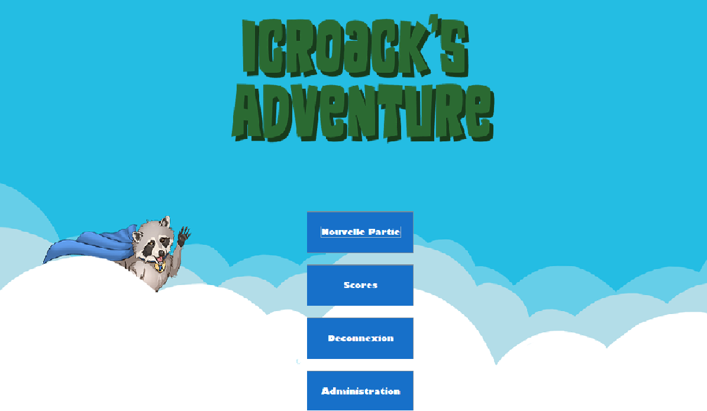

Information
Categorie: Application lourd
Technologie utilisé: JAVA
Introduction
Icroack est un projet réalisé en format lourd développé en java.
Icroak représente un jeu de type jeu de l'oie
Le principe de jeu est d'arriver sur la dernière case en passant
par les différentes cases qui peuvent vous faire jouer des
mauvais tours ...